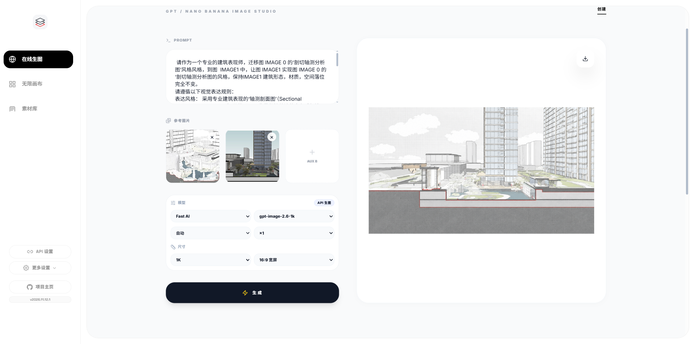
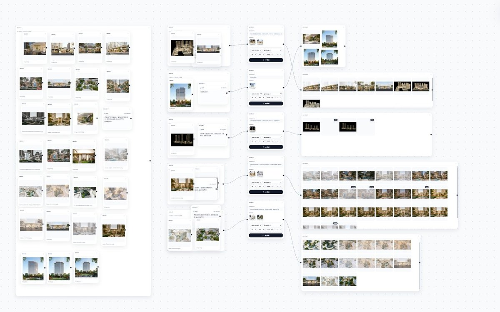
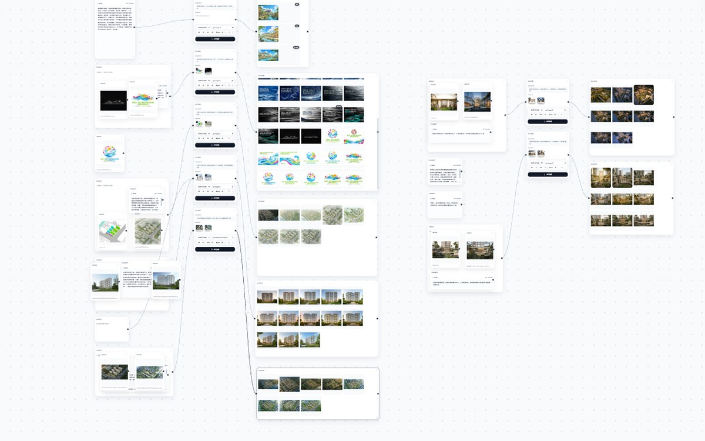

01
自定义工作流
四个内置模板都能改：标题、说明、画幅、节点名称与提示词。支持关键词批量替换、新建、另存与还原默认。
模板可编辑关键词替换
无限画布是一台跑在你自己电脑上的 AI 创作工作台。内置便携运行时，双击即用；自定义工作流、在线生图、无限画布、素材库串成一条流，从一句提示词到归档成册，不用离开画布。
没有账号、没有云端工作区、没有按次计费。API Key 只写进本机配置，素材、历史与画布都落在你自己的文件夹里。
解压后双击 start.bat，不用装 Python、不用配环境。
模板、生成、连线、归档共用同一套侧栏。
每张带 IMAGE 编号，写 Prompt 时直接指代。
素材、生成历史与 Key 都不离开这台电脑。
从模板到参考图，从节点连线到素材归档，每一步都留在同一套界面里。侧栏一次点击就切换，上下文不会丢。
四个内置模板都能改：标题、说明、画幅、节点名称与提示词。支持关键词批量替换、新建、另存与还原默认。
直连云端 API 生成。参考图支持 1–9 张自定义，每张带固定 IMAGE 编号，点编号即可插入提示词，写 Prompt 时直接指代对应图片。
节点自由摆放、连线组合。文生图、图生图、局部重绘、扩展出图、九宫格多视角都在同一张画布上完成。
本地分组、批量整理、智能分类，也能推送到在线平台。配套 Chrome 批量采集插件与 Photoshop 直连面板。
四个模块共用同一套侧栏，浅色与暗色主题都已适配，平板与手机浏览器也能打开。






代码在 GitHub 上，行为可以自己看；更新之前会自动备份，任何时候都能退回上一版。
基于 wuli大雄 的开源项目 Infinite-Canvas 二次开发，沿用上游开源约定，不封装成闭源商用产品。
API Key 写入后端 env，页面不回显。只有你主动调用云端模型时，才会与你配置的 API 地址通信。
一键更新前自动备份、可回滚，完成后自动重启；不想收到更新提示，删掉根目录 VERSION 即可。
新用户直接下载绿色包，不用克隆仓库、不用安装 Python。
内置便携 Python 与全部离线依赖，约 50 MB。解压后请勿删除 python/ 与 packages/ 目录。
手机与平板访问依赖这台电脑保持开机；数据与 API Key 都存在电脑上，跨网络访问请自行评估安全风险。
项目免费，保持开源并注明来源。上游 Infinite-Canvas 已申请著作权，其开源约定（二次开发须保持开源并注明来源作者、禁止擅自商用封装）对上游代码继续适用，请勿擅自封装商用。
不会存到任何服务端。素材、生成历史与 Key 都在本机；只有你主动调用云端模型时，才会与你配置的 API 地址通信。
不需要。绿色包内置便携 Python 与全部离线依赖，断网也能启动；3000 端口被占用时会自动顺延到 3001、3002……
几乎所有 OpenAI 协议 API、异步协议、Gemini 协议、方钩协议，以及 ModelScope 免费 LLM 与图像模型、火山引擎、即梦等。在「API 设置」里统一管理地址、模型列表与 Key。
同一 Wi-Fi 下用浏览器访问电脑的局域网地址即可，内置 Web App 清单可全屏运行；触屏支持单指拖动、双指缩放。电脑关机后无法访问，完全离线的原生 App 暂不支持。
在界面点「一键更新」，程序自动备份后覆盖并重启，也可回滚；「测试连通性」可排查网络。问题请到 GitHub Issues 反馈，提交前先看看是否已有相同问题。
一次下载，之后都在这张画布上完成。